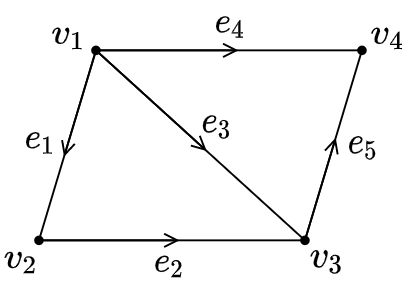

Linear Algebra¶
矩阵与行列式¶
Basics
Derivatives
设 \(a\) 为标量，\(\boldsymbol{b}\) 与 \(\boldsymbol{x}\) 均为列向量，\(A\) 为矩阵，且维数使得运算合法，则
| \(f(\boldsymbol{x})\) | \(\partial f/\partial\boldsymbol{x}\) |
|---|---|
| \(a\boldsymbol{x}\) | \(a\) |
| \(\boldsymbol{b}^\top\boldsymbol{x}\) | \(\boldsymbol{b}\) |
| \(\boldsymbol{x}^\top\boldsymbol{b}\) | \(\boldsymbol{b}^\top\) |
| \(\boldsymbol{x}^\top\boldsymbol{x}\) | \(2\boldsymbol{x}\) |
| \(\boldsymbol{x}\boldsymbol{x}^\top\) | \(2\boldsymbol{x}^\top\) |
| \(\boldsymbol{b}^\top A\boldsymbol{x}\) | \(A^\top\boldsymbol{b}\) |
| \(\boldsymbol{x}^\top A\boldsymbol{b}\) | \(\boldsymbol{b}^\top A\) |
| \(\boldsymbol{x}^\top A\boldsymbol{x}\) | \(\left(A+A^\top\right)\boldsymbol{x}\) |
| \(\exp\left(-\frac{1}{2}\boldsymbol{x}^\top A\boldsymbol{x}\right)\) | \(-\exp\left(-\frac{1}{2}\boldsymbol{x}^\top A\boldsymbol{x}\right)A\boldsymbol{x}\) |
| \(\|\boldsymbol{x}\|_2^2\) | \(2\boldsymbol{x}\) |
矩阵乘法的计算
\(M_{m\times n}\) 代表矩阵 \(M\) 有 \(m\) 行、\(n\) 列. 设 \(A_{m\times n}B_{n\times p}=C_{m\times p}\)：
点积
即 \(C\) 中第 \(i\) 行，第 \(j\) 列的元素恰好是 \(A\) 的第 \(i\) 行与 \(B\) 的第 \(j\) 列之内积.
矩阵乘以列向量
\(C\) 的第 \(j\) 列是 \(A\) 各列的线性组合，其系数为 \(B\) 的第 \(j\) 列. 这一列与 \(B\) 的其它列无关. 这样看来，\(C\) 的每一列都是 \(A\) 与 \(B\) 中对应列的乘积.
行向量乘以矩阵
\(C\) 的第 \(i\) 行是 \(B\) 各行的线性组合，其系数为 \(A\) 的第 \(i\) 行. 这一行与 \(A\) 的其它行无关. 这样看来，\(C\) 的每一行都是 \(A\) 中对应行与 \(B\) 的乘积.
换一种说法，左乘一个矩阵相当于对右矩阵的各行进行线性组合. 积矩阵和左矩阵的行数相同，且积矩阵中每一行都是左矩阵中对应位置的行中各元素作为系数，将右矩阵每一行组合相加得到的结果，即左矩阵对应行与右矩阵的乘积. 相应地，右乘对应的是列变换.
列向量乘以行向量
将 \(A\) 中各列和 \(B\) 中各行对应相乘，得到的矩阵全部相加即得 \(C\). 值得一提的是，列向量乘以行向量得到的矩阵中，每一列都是列向量的倍数，每一行都是行向量的倍数.
关于行列式的变换
- 交换两行/列，行列式变号；
- 用 \(k\) 乘以某行/列，行列式的值亦变为其 \(k\) 倍；
- 将某行/列视为两数之和，则行列式可根据该行/列拆分：
- 某行/列的 \(k\) 倍加至另一行/列，行列式的值不变.
逆矩阵
不可逆的方阵
-
行列式为零.
-
存在某些行或列线性相关.
方阵左乘或右乘某矩阵，一定得到其行或列的线性组合所组成的矩阵. 这些列不可能通过线性组合得到一组完整的单位正交基. 以二阶矩阵为例，所得积矩阵各列一定均与原矩阵的列成比例.
- 存在某非零向量 \(\boldsymbol{x}\) 满足 \(A\boldsymbol{x} = \boldsymbol{0}\).
若 \(A\) 的逆存在，则 \(A^{-1}A\boldsymbol{x} = A^{-1}\boldsymbol{0}\) 将意味着 \(\boldsymbol{x}=\boldsymbol{0}\)，矛盾.
Gauss-Jordan 法求逆
本质是求解 \(n\) 个 \(n\) 元线性方程组，其中第 \(k\) 个方程组的常数项向量是 \(I\) 的第 \(k\) 列，将得到的解向量依次排列即得到逆. 如第一个方程组是 \(A\boldsymbol{x}_1=\big[1, 0, 0, \cdots\big]^\top\). 将这些方程组直接合成一个矩阵，进行 Gauss-Jordan 消元就成为了上面的式子所表示的过程.
宏观地来看，G-J 消元所使用的是初等行变换，相当于左乘一个矩阵. 左乘某矩阵使得 \(A\) 变为 \(I\)，那么该矩阵就是 \(A^{-1}\)，它左乘 \(I\) 得到自身. 这一步即右矩阵的每一列决定了左矩阵各列的线性组合，并得到积矩阵中对应位置的列.
初等变换矩阵的逆
对于将某一行/列乘以 \(k\) 倍，加至另一行/列的情况，对应的矩阵的形式为单位矩阵中的某一个零换为 \(k\). 如矩阵
代表的是将第一行的 2 倍加至第二行，或第二列的 2 倍加至第一列. 按照这个思想，它的逆就是将 2 反号.
对于交换行/列的情况，这样的矩阵形式为相应地重新排列单位矩阵的行/列所得结果，称为置换矩阵. 置换矩阵的逆是它的转置（正交矩阵），并且任意同阶的所有置换矩阵，在乘法上具有封闭性，且构成一个乘法群.
LU 分解
对可逆矩阵 \(A\) 进行 Gauss 消元，可以得到上三角矩阵 \(U\)，消元的过程相当于将一系列初等行变换矩阵左乘至 \(A\)，将它们作为整体求逆即得到下三角矩阵 \(L\).
若消元中会出现主元为零的情况，则需要进行行交换，此时 LU 分解的形式变为 \(PA=LU\).
Moore-Penrose 伪逆
\(A\) 的伪逆 \(A^+\) 满足
且 \(AA^+\) 与 \(A^+A\) 均对称. \(A^+\) 有且仅有一个. Moore-Penrose 伪逆定义为
实际计算中，将 \(A\) 奇异值分解，
则
其中 \(\Sigma^+\) 是将 \(\Sigma\) 各元素取倒数，然后转置而得到的.
若 \(\boldsymbol{Ax}=\boldsymbol{y}\) 有多解，则由 \(\boldsymbol{x}=\boldsymbol{A}^+\boldsymbol{y}\) 得到的解是使得 \(\Vert\boldsymbol{x}\Vert_2\) 最小的那一个；若无解，则得到的解使得 \(\Vert\boldsymbol{Ax}-\boldsymbol{y}\Vert_2\) 最小.
向量空间与线性方程组¶
初等变换
初等行变换有以下三种操作：
- 非零实数 \(k\) 乘至某行；
- 某行 \(k\) 倍加至另一行；
- 互换两行.
初等列变换同理.
初等行变换相当于左乘一个满秩矩阵，初等列变化相当于右乘一个满秩矩阵.
初等变换得到的矩阵和原矩阵等价. \(A\) 与 \(B\) 等价记作 \(A\sim B\). 初等变换不会改变秩.
列空间
矩阵 \(A\) 的各列所张成的空间称为其列空间 \(C(A)\). 线性方程组有解的充要条件就是常数项向量属于系数矩阵的列空间. 相同地可以定义行空间 \(C(A^\top)\).
列空间和行空间的维数均等于矩阵的秩.
列初等变换不会改变列空间，行初等变换不会改变行空间.
零空间 | Null Space
线性方程组 \(A\boldsymbol{x} = \boldsymbol{0}\) 的所有解所组成的空间为矩阵 \(A\) 的零空间 \(N(A)\). 即其中向量均由将 \(A\) 所含列向量进行线性组合得到零向量的系数所组成. 这些向量显然对线性组合是封闭的，所以这是一个向量空间. 几何上来看，零空间表示的是一个经过原点的超平面. 如果上述方程组的常数项向量非零，那么解集合表示的超平面不经过原点，无法组成向量空间.
零空间的维数等于矩阵列数减去秩 \(n-r\)，即自由变量的数量.
\(A^\top\) 的零空间即为 \(A\) 的左零空间 \(N(A^\top)\). 相同地，左零空间中的向量各分量作为系数，将 \(A\) 各行进行线性组合，得到零向量. 求取左零空间不一定要将矩阵转置求解. 将 \(A\) G-J 消元相当于左乘某初等矩阵，而得到的最简行阶梯式若含有全零行，这些行对应到左矩阵的各行即为左零空间的基.
左零空间的维数等于矩阵行数减去秩 \(m-r\)，即冗余方程的数量.
解线性方程组
对于齐次线性方程组 \(A\boldsymbol{x} = \boldsymbol{0}\)，首先进行 Gauss-Jordan 消元，将系数矩阵 \(A\) 变换为上三角矩阵（行阶梯形矩阵，row echelon form）\(U\)、最简行阶梯形矩阵（reduced row echelon form，rref）\(R\).
此时每次选出一个自由变量，设其值为 1，其余自由变量为 0，解出主元. 对每一个自由变量均进行这样的处理，得到的解的集合即为解空间的一组基. 这个方法经过整理后可以得到以下的矩阵方法.
\(R\) 中主元所在的行列交集会正好组成一个单位矩阵. 可以通过列交换将这部分移动到矩阵左上方. 此时的系数矩阵的形式表现为
其中 \(F\) 是由自由变量的系数组成的矩阵. 经过这样的列交换，解的各分量就按照主元和自由变量分开为 \(\boldsymbol{x} = \begin{bmatrix}\boldsymbol{x}_{\mathrm{pivot}} \\ \boldsymbol{x}_{\mathrm{free}}\end{bmatrix}\) 的形式. 每次选出一个自由变量设为 1，其余为 0 的步骤可以合为一步：将 \(\boldsymbol{x}_{\mathrm{free}}\) 替换为 \(I\). 观察也可以得到，以上得到的每一组解中主元正好是 \(F\) 中某一列反号的结果，合起来就是将 \(\boldsymbol{x}_{\mathrm{pivot}}\) 替换为 \(-F\). 由此得到的矩阵
称为零空间矩阵，其各列为零空间的一组基. 容易验证，
E.g.
解线性方程组
系数矩阵
进行 Gauss-Jordan 消元，得
列交换，得
列交换后的零空间矩阵
恢复到原来的变元顺序，得
故解为
对于非齐次方程组 \(A\boldsymbol{x} = \boldsymbol{b}\)，G-J 消元后将所有自由变量设为零，解出特解. 特解与零空间之和即为通解.
秩
矩阵 \(A\) 的秩即为 \(A\) 的行阶梯式中非全零行数.
乘以一个矩阵不可能使得结果的秩更大，
矩阵和的秩不大于秩之和，
Circuit in Matrix Form
电路拓扑结构与参考方向如图所示.

使用矩阵表示此结构. 矩阵第 \(k\) 行表示边 \(e_k\)，始点序号对应的列上为 -1，终点序号对应的列上为 1，得到矩阵
电势、零空间
设结点 \(v_k\) 电势为 \(u_k\)，则
各分量对应各边上的电势差. \(A\) 的零空间为 \(N(A) = \left\{\big[k~~k~~k~~k\big]^\top\right\}, k\in\mathbb{R}\)，说明各边电势差为零时，各结点必然等电势.
电流、左零空间
设 \(e_k\) 上的电流为 \(i_k\)，则
各分量对应各点流入的净电流. 此外，欧姆定律可表示为 \(\boldsymbol{v} = R\boldsymbol{i}\)，其中 \(\boldsymbol{v} = A\boldsymbol{u}\) 为电势差向量，\(R\) 为电阻矩阵.
基尔霍夫（Кирхгоф，Kirchhoff）电流定律：
\(A\) 的左零空间 \(N(A^\top)\) 维数为 2，这说明满足 KCL 的电流取值空间是 2 个基底的线性组合. 这也和电路中有 2 个独立回路相符合. 如使用回路 \(\big\{e_1, e_2, -e_3\big\}\) 和 \(\big\{e_3, e_5, -e_4\big\}\) 可表示任意合法电流取值
行、回路、线性相关
\(A\) 中某行向量组线性相关的充要条件是该向量组所表示的边包含回路. 即回路是产生线性相关性的原因.
列、秩
显然，当 \(n-1\) 个结点的出入情况确定后，最后一个点的出入情况也随之确定. 这在矩阵 \(A\) 中表现为所有列之和为 \(\boldsymbol{0}\)，并且 \(A\) 的秩比结点数少 1，即 \(r = n-1\). 零空间的维数为 1，与此结果相符合.
欧拉公式
根据之前的讨论
由此得到
这是欧拉公式的更一般的形式，且在连通非平面图上也成立. 从另一角度看，任意连通图中，考虑某生成树，任一非树边都对应一个独立回路，即 \(L = E - (V - 1)\)，和上面的公式是一致的.
线性方程组的解
系数矩阵和增广矩阵的秩判据
对于 \(n\) 元线性方程组 \(A\boldsymbol{x} = \boldsymbol{b}\)，系数矩阵为 \(A\)，增广矩阵为 \((A, \boldsymbol{b})\)：
- \(R(A) < R(A, \boldsymbol{b})\) 时，零系数得到非零和，无解；
- \(R(A) = R(A, \boldsymbol{b}) = n\) 时，有唯一解；
- \(R(A) = R(A, \boldsymbol{b}) < n\) 时，有无穷多解.
另外，\(A\boldsymbol{x} = \boldsymbol{0}\) 有解的充要条件是 \(R(A) < n\).
行秩与列秩判据
对于含有 \(m\) 个方程的 \(n\) 元线性方程组 \(A\boldsymbol{x} = \boldsymbol{b}\)，系数矩阵 \(A_{m\times n}\) 的秩有以下情况：
-
\(r = n\)（列满秩）且 \(r < m\) 时，
- \(R = \begin{bmatrix}I \\ 0\end{bmatrix}\)；
- 不含自由变量；
- 方程组有 0 或 1 组解；
- 当行阶梯式末尾零行对应常数项为零时有唯一解 \(\boldsymbol{x} = \boldsymbol{x}_{\mathrm{particular}}\)，否则无解.
-
\(r = m\)（行满秩）且 \(r < n\) 时，
- \(R' = \begin{bmatrix}I ~~ F\end{bmatrix}\)；
- 含有 \(n-r\) 个自由变量；
- 解一定存在，且有无穷多组；
- \(\boldsymbol{x} = \boldsymbol{x}_{\mathrm{particular}} + \boldsymbol{x}_{\mathrm{null}}\).
-
\(r = m = n\)（满秩）时，
- \(R = I\)；
- 解一定存在，且唯一.
-
\(r < m\) 且 \(r < n\) 时，
- \(R' = \begin{bmatrix}I & F \\ 0 & 0\end{bmatrix}\)；
- 含有 \(n-r\) 个自由变量；
- 方程组有 0 或无穷组解.
正交性¶
正交空间
若两向量空间 \(S\)，\(T\) 满足 \(\forall u \in S\)，\(\forall v \in T\)，\(u\perp v\)，则称 \(S\) 与 \(T\) 正交.
对于秩为 \(r\) 的矩阵 \(A_{m\times n}\)，
- 其行空间 \(C(A^\top)\) 与零空间 \(N(A)\) 正交，且均在 \(\mathbb{R}^n\) 中，两空间维数分别为 \(r\) 与 \(n-r\)；
- 其列空间 \(C(A)\) 与左零空间 \(N(A^\top)\) 正交，且均在 \(\mathbb{R}^m\) 中，两空间维数分别为 \(r\) 与 \(m-r\).
以上两组子空间正交均是互为正交补（orthogonal complement）的情况，即一向量空间包含了所在空间中所有与另一向量空间垂直的向量.
投影矩阵

设 \(\mathbb{R}^m\) 中一向量空间（过原点的超平面）\(\alpha\) 的一组基底为 \(\{\boldsymbol{a}_1, \boldsymbol{a}_2,\cdots, \boldsymbol{a}_n\}\)，向量 \(\boldsymbol{b}\) 在 \(\alpha\) 上的投影为 \(\boldsymbol{p}\)，差值为 \(\boldsymbol{e} = \boldsymbol{b} - \boldsymbol{p}\). 下面讨论投影矩阵 \(P\)，该矩阵满足 \(\boldsymbol{p} = P\boldsymbol{b}\).
设矩阵 \(A = \big[\boldsymbol{a}_1, \boldsymbol{a}_2,\cdots, \boldsymbol{a}_n\big]\)，则其列空间即为 \(\alpha\). 由于投影 \(\boldsymbol{p}\) 必然位于 \(\alpha\) 上，故 \(\boldsymbol{p}\) 可表达为 \(\boldsymbol{a}\) 的线性组合
写成矩阵的形式为
由投影的性质有 \(\alpha\perp\boldsymbol{e}\)，即 \(\boldsymbol{a}_i\cdot\boldsymbol{e} = 0\)，\(i = 1, 2, \cdots, n\). 写成矩阵形式，得
Note
以上方程表明 \(\boldsymbol{e}\) 在 \(A\) 的左零空间 \(N(A^\top)\) 当中，而 \(\boldsymbol{e}\) 与 \(A\) 的列空间 \(C(A) = \alpha\) 垂直，这也表明了左零空间和列空间的正交关系.
继续化简，有
最后得到
投影
投影矩阵
这个投影矩阵必然是对称的 (\(P^\top = P\))，并且满足幂等律 (\(P^2 = P\)). 幂等律的几何解释是：无论将 \(\boldsymbol{b}\) 向 \(\alpha\) 投影多少次，得到的结果都相同.
特别地，当 \(\alpha\) 为一维时，\(P\) 与 \(\boldsymbol{p}\) 退化为
当 \(A\) 为可逆矩阵时，这意味着张成 \(\alpha\) 的一组基底包含 \(m\) 个 \(\mathbb{R}^m\) 中的向量，故 \(\alpha = \mathbb{R}^m\)，此时 \(\boldsymbol{b}\) 必然已经在 \(\alpha\) 上，投影后还在原来的位置. 相应地，投影矩阵退化为 \(R = I\).
当 \(\boldsymbol{b}\perp\alpha\) 时，即 \(\boldsymbol{b}\perp C(A)\)，故 \(\boldsymbol{b}\in N(A^\top)\)，此时 \(\boldsymbol{p} = A\left(A^\top A\right)^{-1}\left(A^\top\boldsymbol{b}\right) = \boldsymbol{0}\).
最小二乘法
当线性方程组 \(A\boldsymbol{x} = \boldsymbol{b}\) 无解时，\(\boldsymbol{b}\) 不在 \(A\) 的列空间内. 为了找到一个尽可能近似满足方程的解 \(\hat{\boldsymbol{x}}\)，需要在 \(A\) 的列空间内找到一个与 \(\boldsymbol{b}\) 最接近的向量 \(\boldsymbol{p}\)，将原方程变为 \(A\hat{\boldsymbol{x}} = \boldsymbol{p}\).
所谓“最接近”，即为最小化 \(\|A\boldsymbol{x}-\boldsymbol{b}\|\)，使方程两边的向量间距最小. 根据几何性质，\(\boldsymbol{p}\) 即为 \(\boldsymbol{b}\) 在 \(A\) 的列空间上的投影. 根据前面讨论的投影矩阵，投影后的方程为
在统计学当中，这个方法正是最小二乘法. 原方程组中的每一个方程均代表一个样本点，\(\boldsymbol{b}\) 中的每一个分量是样本点的因变量值，\(\boldsymbol{p}\) 的每一个分量是各样本点拟合后的值，\(\boldsymbol{x}\) 是拟合直线的系数向量.
当 \(A\) 的各列线性无关时，\(A^\top A\) 一定是可逆的. 这也是上面的方程应用的条件. 要证明这个结论，只需要证方程 \(A^\top A\boldsymbol{x} = \boldsymbol{0}\) 只有零解. 方程左乘 \(\boldsymbol{x}^\top\) 得 \(\boldsymbol{x}^\top A^\top A\boldsymbol{x}=\boldsymbol{0}\)，等价于 \(A\boldsymbol{x} = \boldsymbol{0}\)，从而 \(\boldsymbol{x}\) 必然为零. 事实上 \(A^\top A\) 和 \(A\) 的零空间和秩都是相同的.
正交矩阵
An orthogonal matrix is a square matrix whose rows and columns are respectively mutually orthonormal.
设正交矩阵 \(Q = \big[\boldsymbol{q}_1, \boldsymbol{q}_2, \cdots, \boldsymbol{q}_n\big]\)，由于其各列互相正交，
故
同理，由于其各行互相正交，有
综上，
Gram-Schmidt Orthonormalization
逐个处理需要正交化的向量 \(\boldsymbol{v}\). 将向量 \(\boldsymbol{v}_k\) 分别减去其在已正交化的向量 \(\boldsymbol{u}_i\) 上的投影，
最后将所有向量归一化.
过程演示如下2.

特征值与特征向量¶
相似矩阵
若 \(\exists P\) 使得
则称 \(A\) 与 \(B\) 相似.
相似矩阵具有相同的特征值. 实际上，相似矩阵和基变换的形式是完全一致的，即相似矩阵是在不同基底下，对相同的线性变换的描述.
对角化
若对于方阵 \(A\)，存在一个正交阵 \(P\)，将其相似变换为一个对角阵，
则称 \(A\) 是可（相似）对角化的.
\(n\) 阶方阵 \(A\) 能相似对角化的充要条件是它有 \(n\) 个线性无关的特征向量. 实对称矩阵一定可以对角化.
奇异值分解
对任意实矩阵 \(A_{m\times n}\)，其 SVD 为
\(U_{m\times m}\) 为左奇异向量组成的正交矩阵，\(\Sigma_{m\times n}\) 为各奇异值组成的对角阵，\(V_{n\times n}\) 为右奇异向量组成的正交矩阵.
考虑
故将 \(A^\top A\) 特征分解，得到各个特征值的算术平方根 \(\sqrt{\lambda_i}\) 即为各奇异值 \(\sigma_i\)（\(A^\top A\) 必然是半正定的，\(\lambda_i \ge 0\)），对应的特征向量组成 \(V\).